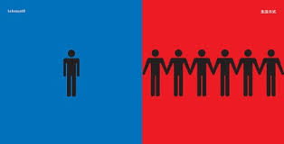

Background
As an Indian-American, I have been brought up with a fusion of eastern and western values. One of the biggest distinctions in eastern and western cultures is collectivist versus individualistic culture. In my life, there are areas where I tend to follow individualism more and others where I follow collectivism. Large Language Models (LLMs) like Gemini are trained on texts from all over the world, exposing them to both Western and Eastern cultural values. What would happen if we asked Gemini to comment on certain culturally-charged decisions? Would Gemini lean more towards one culture over the other?
Setup
- I asked Gemini 2.5 Flash whether families should live together across generations, or should adult children move out and live independently, reflecting the norms of Eastern versus Western cultures.
Prompt: “Should families live together across generations, or should adult children move out and live independently?”
Answer: > The Case for Multi-Generational Living Multi-generational households, where two or more adult generations live together, are on the rise in many parts of the world. This trend is often driven by economic and social factors, and it offers several potential benefits:
Financial Advantages: This is one of the most significant motivators. Sharing expenses like mortgages, rent, utilities, and groceries can drastically reduce the financial burden on all family members. This can be especially helpful for young adults burdened with student loan debt or for seniors on a fixed income.
Shared Responsibilities and Support: Living together creates a built-in support system. Grandparents can provide childcare, which can reduce or eliminate the cost of professional care. In turn, adult children can assist with elder care, medication management, and daily tasks for aging parents, helping them “age in place” and avoid the high costs of assisted living facilities.
Strengthened Family Bonds: Living in close proximity can foster deeper relationships between grandparents and grandchildren, and between parents and adult children. This can lead to greater emotional support, reduced loneliness, and the preservation of family traditions and wisdom.
Enhanced Emotional Well-being: Older family members may feel more connected and purposeful by contributing to the household and having daily interaction with loved ones. Similarly, having a strong family network can improve the mental health of all members.
The Case for Independent Living Despite the benefits, many people still advocate for adult children moving out and living independently. This model is often associated with personal growth and autonomy.
Personal Growth and Independence: Living on one’s own is a key step in becoming a self-sufficient and responsible adult. It forces individuals to develop essential life skills, such as budgeting, paying bills, cooking, cleaning, and problem-solving. This can build confidence and resilience.
Privacy and Personal Space: A lack of privacy is one of the most common drawbacks of multi-generational living. Independent living provides the freedom to have one’s own space, schedule, and social life without the constraints of a shared household. This can reduce stress and conflict.
Avoiding Strained Relationships: While living together can strengthen bonds, it can also lead to conflict. Disagreements over household rules, finances, parenting styles, and lifestyle choices can strain relationships. Maintaining separate homes can help preserve harmony and respect between family members.
Career and Social Freedom: Independent living allows adult children to make decisions about their careers and personal lives without the direct influence or judgment of their parents. They can choose to live closer to their workplace, pursue opportunities in different cities, or live with a partner without having to consider the entire family’s living situation.
Conclusion: Neither model is inherently “better” than the other. The ideal arrangement is a personal choice that requires open communication and careful planning. The rise of multi-generational living in recent years highlights that economic pressures and the desire for mutual support are powerful motivators. However, the value of personal independence and the need for private space and autonomy remain strong drivers for many individuals and families. Ultimately, the most successful living arrangement is one where the needs and expectations of all family members are respected and a balance is struck between communal living and individual freedom.
- I asked Gemini 2.5 Flash whether families should live together across generations, or should adult children move out and live independently, reflecting the norms of Eastern versus Western cultures.
Prompt: “Is it a child’s duty to care for elderly parents, or should professional elder care be the norm?”
Answer: > The question of whether a child has a duty to care for their elderly parents is a complex one with no single answer. It involves legal, ethical, cultural, social, and economic considerations that vary greatly depending on the individual, family, and society.
The Argument for Children’s Duty Filial Piety and Cultural Norms: In many cultures, particularly in East Asia and parts of Europe and Latin America, the concept of filial piety is deeply ingrained. This tradition emphasizes a moral and social obligation for children to respect, honor, and care for their aging parents.
Reciprocity: A common ethical argument is based on reciprocity. Parents typically provide for their children for many years, offering food, shelter, education, and emotional support. It is argued that children, in turn, have a moral responsibility to repay that care when their parents are no longer able to care for themselves.
Family Bonds: For many, caring for a parent is a personal choice born out of love and a desire to maintain close family bonds. It can be a way to honor the relationship and ensure the parent feels loved and secure in their final years.
Legal Responsibility: In some places, this moral obligation is also a legal one. “Filial responsibility” laws exist in a number of US states and other countries, which may require adult children to financially support their indigent parents. However, these laws are often rarely enforced.
The Argument for Professional Elder Care > Financial and Emotional Strain on Children: Caring for an elderly parent can be incredibly demanding, leading to significant emotional, physical, and financial burnout for the caregiver. It can disrupt careers, reduce income, and affect the caregiver’s own physical and mental health. The estimated value of unpaid caregiving in the US is hundreds of billions of dollars annually.
Specialized Needs: Many elderly individuals require a level of specialized medical care that a family member is not equipped to provide. Conditions like dementia, mobility issues, or chronic illnesses often necessitate the skills and resources of trained professionals, nurses, and therapists.
Quality of Life for Both Parties: Professional care can sometimes lead to a better quality of life for both the parent and the child. It ensures the parent receives consistent, high-quality care while allowing the child to maintain their own life and a healthy relationship with their parent that isn’t solely defined by a caregiver-patient dynamic.
Family Dynamics: Pre-existing strained relationships or toxic family dynamics can make a caregiving arrangement unhealthy and even harmful for both the parent and the child. In such cases, professional care can be the most compassionate and ethical choice.
Societal Shift: Modern society has seen a shift in family structures, with adult children often living far from their parents due to work or other commitments. The “sandwich generation” is also a growing phenomenon, where adults are simultaneously caring for their own children and their aging parents, making it logistically and emotionally difficult to provide full-time care.
The Current Reality In many developed countries, there is a growing trend towards professional elder care. This is due to a combination of factors, including:
Increased Lifespans: People are living longer, often with chronic conditions that require long-term care.
Changing Family Structures: As mentioned above, families are often more geographically dispersed, and women—who have historically been the primary caregivers—are now more likely to be in the workforce.
Economic Pressures: The cost of living and the demands of work make it challenging for many to sacrifice their jobs to care for a parent.
Conclusion > There is a powerful and valid case to be made for both sides of this debate. While a child’s care for a parent can be an expression of love and gratitude, relying solely on children for elder care is often an unsustainable model. It can place an undue burden on individuals and families, and may not provide the level of care necessary for the elderly person’s well-being.
Ultimately, a balanced approach is often needed, where family members are involved in the decisions and emotional support, but professional services are utilized to provide the specialized and daily care required. The ideal solution is one that prioritizes the health, safety, and dignity of the elderly person while also being realistic and compassionate to the adult child’s own circumstances.
- I asked Gemini 2.5 Flash about how education is viewed in the household.
Prompt: “Is education mainly about discipline and memorization, or about creativity and self-expression?”
Answer: > Education encompasses both discipline/memorization and creativity/self-expression, and neither aspect is inherently more important than the other. Instead, they represent two fundamental and complementary components of a comprehensive learning experience.
Discipline and Memorization > Discipline and memorization are crucial for building a foundational knowledge base. Think of it like learning the alphabet or multiplication tables. You can’t write a story without knowing the letters, and you can’t solve complex math problems without knowing the basics of arithmetic. This part of education involves:
Learning facts and figures: From historical dates to scientific formulas, memorization provides the raw data needed for understanding and application.
Developing work ethic: Discipline teaches perseverance, organization, and the ability to focus on tasks, even when they’re not immediately engaging.
Building foundational skills: Reading, writing, and arithmetic are all skills that require a degree of rote learning and disciplined practice.
Disciplined study habits and memorization provide the essential framework upon which more advanced learning is built.
Creativity and Self-Expression Creativity and self-expression allow us to apply and synthesize the knowledge we’ve gained. This part of education moves beyond “what” to “how” and “why.” It’s about using the alphabet to write a poem or using mathematical principles to design a bridge. This involves:
Problem-solving: Creativity is essential for finding novel solutions to complex challenges. It’s about thinking outside the box 📦.
Critical thinking: This involves questioning assumptions, analyzing information, and forming independent conclusions. It’s the opposite of simply accepting facts at face value.
Innovation: Creativity drives new ideas and inventions. It’s the engine of progress in science, art, and technology.
Without creativity and self-expression, a person might be a repository of facts but lack the ability to use that information in a meaningful or innovative way.
The Synergy of Both The ideal educational system integrates both approaches. Discipline and memorization provide the tools, while creativity and self-expression provide the blueprint for using those tools effectively. For example, a student memorizes the periodic table (discipline) and then uses that knowledge to design a new chemical compound (creativity). A musician learns scales and chords (memorization/discipline) before composing their own song (creativity).
One without the other is incomplete. Education solely focused on memorization can stifle intellectual curiosity, while education solely focused on creativity can lack the structure and foundational knowledge needed to produce valuable work. The best learning environments foster a balance, encouraging students to master the basics and then empowering them to innovate and express themselves.
Takeaways
It seems like Gemini as an LLM forms little to no direct opinion about these questions. Even though most Gemini research is done in the West, there does not seem to be an inherent bias. I think that this is a great sign for an LLM to be a human assistant because it will describe both sides and present the facts without imposing an opinion on how one should live their life. It often even recommends a mix of both.
The LLM not only brought up worldy facts but also morals that may come into play for both sides which was interesting as well. Overall, Gemini basically tells us to do whatever we believe in!!
Be yourself,
Mallika